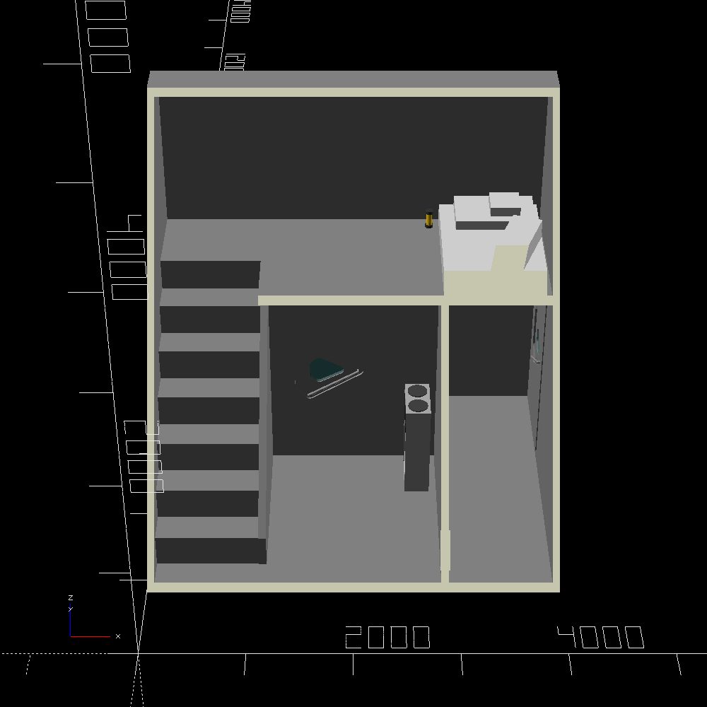
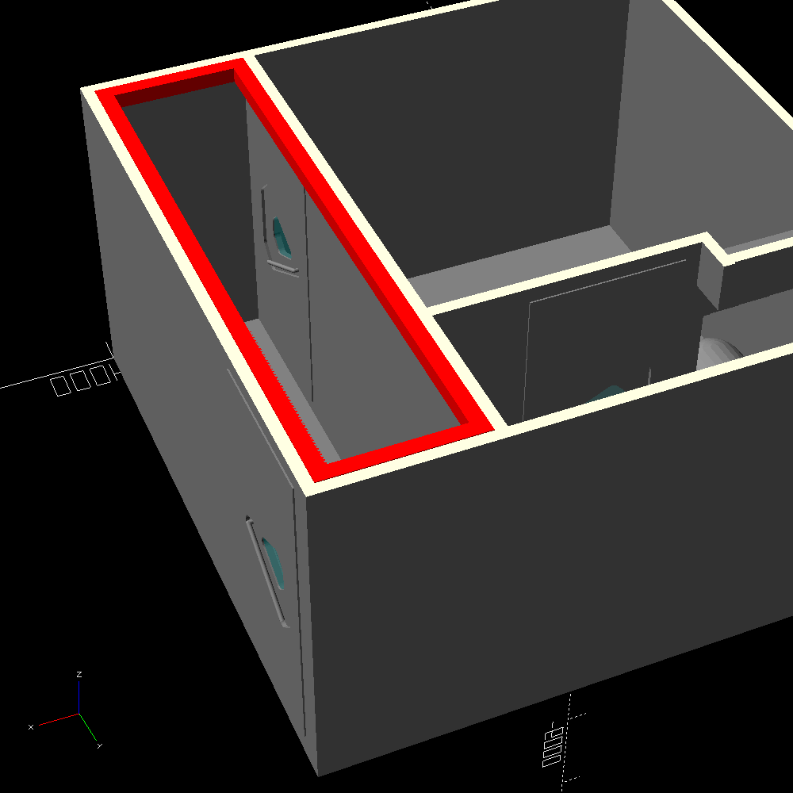
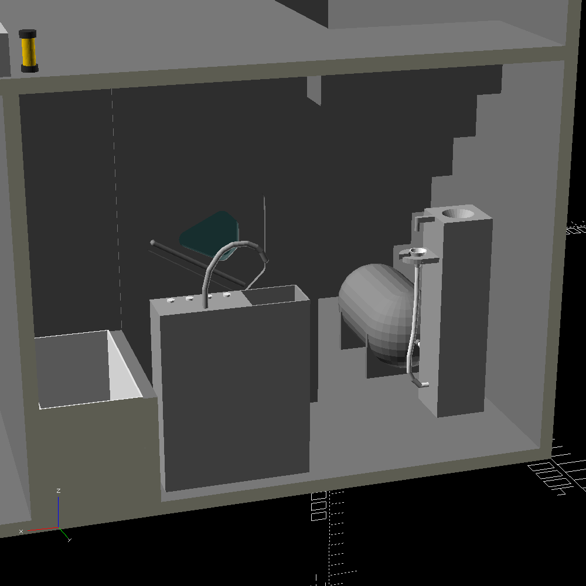
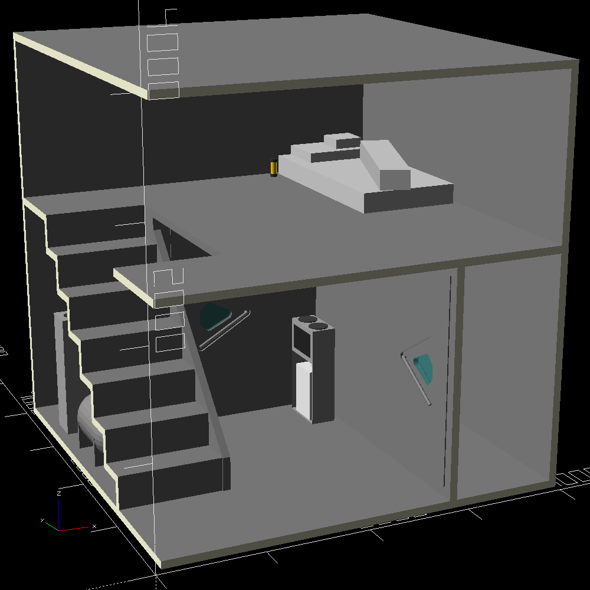

This may or may not be developped further.
link to this page
Pathouse

Minimal viable house by Patricia Whateverweaver for her own use.
Although the house is full of strange choices motivated by being designed by one exact person in accordance with their many unusual preferences, the entire design was still released for anyone who may benefit from it.
In external dimensions the house is an exact 4 metres by 4 metres by 4 metres cube, with only exception being the airlock door which sticks out by just a few millimetres.
Living conditions
The house by default includes no plumbing or unified electrical installation, and instead relies on portable appliances which all have their own internal storage and power sources.
Any appliance that can be moved through a 1m by 1m hole is nearly guaranteed to be possible to move inside the house, as all doorways are 1m by 2m in size, and the stairs provide a passage no narrower than 1m by 1m up to the second floor.
The lack of either electrical lines or windows means that portable battery-powered light sources are the most likely method for lighting up the house, though this is not a problem for any inhabitant who relies on active sensors (eg. lidar, sonar or cameras with included light emitters).
The darkness ostensibly contributes to a cozy feeling in the house.
Network access can be easily achieved by placing a laser-based network node on the wall near the inner-side airlock door, lined up such that it can see through the window of both the inner and the outer airlock door, to a network node placed outside.
Other than that the 75mm metal walls of the house act as a faraday cage that blocks all radio communication, but may still allow transfer of data by vibration.
It is assumed that the inhabitant will rely on non-perishable food, but if needed, dedicated food storage appliances could be moved in, which would ofcourse have to be battery-powered.
Trash may be disposed of by packing it into sealable bags right away as to not be given time to contaminate the house's fairly small air volume.
The house is notably minimal and may evoke a feeling of camping more than living unless the inhabitant is already used to similar conditions.
Airlock and air volume

The airlock is a room of internal dimensions 1000mm by 3850mm by 2200mm, giving a total of 8.47 m3.
Cycling of the airlock is done through simply venting the atmosphere to the outside, or from the house into the airlock, using manually operated valves - moving the handle of the door to the middle position will open a small passage from one side to the other, allowing air to pass through.
The opening is 4cm in diameter which means that, if the airlock room was originally filled with 0.21 bar of oxygen and outside was complete vacuum, then it will take about 225 seconds till the door can be opened with a modest amount of force - at that time there is still just over 25 pascals of gas pressure inside, which means 50 newtons of force is needed to pull the door in, about as much as lifting 5kg on earth.
If the starting pressure was 1 bar such as when the atmosphere being used is an oxygen-hydrogen mix rather than the cheap pure oxygen, the process will take 277 seconds, but in such a case a compressor might be used instead to pump the air back into the house rather than simply venting it out, which would take a much longer time.
There is no mechanism which strictly prevents depresurizing the entire house - doing so would require either trying to exit while the inner side of the airlock is left open, or holding the handles of both airlock doors in the middle position.
The entire house has an internal volume of about 57 cubic metres, as such trying to exit that way would take about 1515 seconds, but the oxygen pressure inside the house would have already dropped to an uninhabitable level after 232 seconds.
See air leak calculator for testing specific parameters.
Bathroom

The bathroom is separated from the rest of the house by a door identical to those which the airlock uses.
In case of septic tank leakage, it can be sealed off completely from the rest of the house to keep it at least temporarily habitable until repairs can be performed.
A bathtub is included (505mm×955mm×610mm), which in reality is just a cavity with an added 1cm thick closed cell polyethylene foam liner, and no plumbing.
It is not so much for bathing as just a spot where pretty much any amount of water spillage can occur with no consequence.
The tap from the nearby sink is meant to be used as a source of warm water for cleaning.
The sink placed near the bath tub has its own internal fresh and waste water tank (16L each), as well as a battery for its internal pump and heater.
To avoid using its front touchscreen (not visible from this side) with wet hands, it includes 4 buttons to increase/decrease the temperature/flowrate of water.
The current settings of temperature and flow rate are displayed on the front and will be precisely implemented.
Given a reasonable flow rate of 80 ml/s, the sink's 16L source water tank is only enough for about 200 seconds of flow, after which it will have to be removed and refilled.
The included toilet is designed to accomodate a broader range of body shapes, some of which may not be compatible with human furniture.
It is connected to a 160L waste storage tank, which is vacuumed out.
The inhabitant is intended to relieve themself into the funnel linked to the toilet with a hose, which will cause it to momentarily open the valve to the storage tank whenever it detects a buildup of liquid.
In case of solid waste, the funnel is placed back in the holder and flushing can be initiated at the press of a button - this will case a small amount of water to be dispensed into the funnel from a tap located directly above it, providing a weak pressure seal, and shortly afterwards the storage tank valve will be opened, causing the funnel's contents to be vacuumed down.
This is repeated several times until the toilet no longer detects contents other than water passing through, and the funnel can be plugged.
An unfortunate side effect of this process is that it creates noise that people unfamiliar with this type of toilet might get startled by.
The internal water storage for flushing is replenished by pouring water mixed with appropriate waste treatment chemicals into a different funnel located on top of the toilet.
Main living space

The main livng space of the house is a single room in terms of air volume, and includes stairs for reaching the second floor.
Size of the stair steps is 325mm in length and in height, and 1 metre in width.
The first floor provides 5.9 m2 with a 2.125m separation between floor and ceilling. for a total of (not counting the horizontal surface of each stair step ).
The second floor provides 12.6225 m2 of useable floor area with a 1.575m separation between floor and ceiling, but there is nothing stopping the ceiling from being raised enough for a human to stand under other than the arbitrary design constraint of fitting within a 4m×4m×4m cube.
Total floor area of this region of the house is 18.5225 m2, and the volume is roughly 34.676 m3[uncertain] (not counting the airlock, bathroom, and the horizontal surfaces of the stair steps).
The example image shows it including a small battery-powered electric stove (which isn't strictly necessary) on the first floor, and a mattress together with a collection of pillows and a portable light on the second floor.